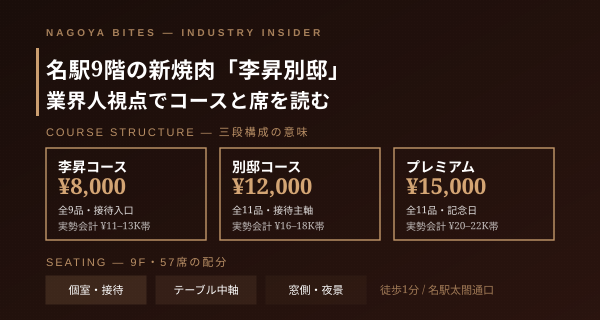

今日の1軒
名駅9階の新焼肉「李昇別邸」を業界人が読む — コース価格・席・予約・接待シーンの使い方
2026年5月5日、名古屋駅太閤通口前の9階に開業した李昇別邸（昇家グループ）。最高峰の松阪牛を軸にコース8,000円・12,000円・15,000円の三段構成。今日はこの一軒を、価格帯の読み方・席の使い分け・予約の取り方・接待シーンの適性という4軸で業界人視点から解剖する。

この記事はNAGOYA BITES — 名古屋の厳選1,100店超を業界視点で紹介するグルメガイドの一部です。
名古屋駅太閤通口の交差点から徒歩1分、9階に上がる。窓越しに名駅周辺の灯りが広がる中で、業界人が密かに動向を追っていた一軒が今月開いた。李昇別邸（RISHO BETTEI）。久屋大通の李昇本館を持つ昇家グループが、名駅という最激戦区に高級焼肉の旗艦を投じた格好だ。最近の名駅高級焼肉新店として、5月のプレスリリースから直近の口コミまで、業界内では既に「動いている店」として認知されている。
業界人が真っ先に見るのは、コース価格帯の三段構成の意味だ。李昇コース8,000円（9品）、別邸コース12,000円（11品）、プレミアム15,000円（11品）。これだけ見るとよくある「松竹梅」だが、実態はそうではない。8,000円帯は接待の入口として、相手の格を測られない設計。12,000円帯は接待の主軸で、ここから松阪牛の特上部位が前面に出てくる。15,000円帯は記念日・家族の節目を狙った構成。サービス料・飲み物・つまみ追加を含めた実勢会計は、それぞれおおよそ¥11–13K帯／¥16–18K帯／¥20–22K帯の着地になるはずだ。アラカルトも並ぶが、初回はコース基準で組み立てる方が満足度が安定する。
次に席だ。9階・全57席・個室ありという構成は、名駅高級焼肉のセグメントでは「中規模」の部類に入る。カウンター主体の小箱でも、大箱の宴会対応店でもない。これが何を意味するか。個室は接待の本命枠、テーブル中軸は同行3〜4名の食事会、窓側は記念日・夜景演出に振れる構成だ。回転意識は強くなく、一度通されたら2時間半は粘れる作り。予約は週末の19時台が最も難しく、平日17:30入店または21時以降のスライドが現実的な狙い目になる。開業から3週間が経った今週時点では、まだ「直近一週間以内に予約が押さえられる」枠が残っている — これは大型新店の最初の数ヶ月にしか効かない、業界人の常套手段だ。
シーン適性を整理する。接待・記念日には極めて強い。9階・57席・個室・コース構成という4条件が揃っている店は名駅で多くない。デートは窓側席が取れるかどうかで評価が変わる ― 取れれば◎、テーブル中軸だと焼肉のオペ感が前に出すぎる。一人飲みには向かない。ここはアラカルトで気軽に流す業態ではなく、コース前提で構築された店だ。繁忙時間帯は19:00–21:00、ランチ営業（平日11:30–14:00）は接待ランチ需要を取りに行く設計で、夜より席を取りやすい。最後に一点 ― 開業直後の店は「最初の3ヶ月でオペが最も滑らかな状態」を保つ。今月から夏前までが、業界人がこの店を試すなら最も合理的な時期になる。
Inside Perspective — 業界人の目利き
- 価格帯の読み方：李昇8,000円は接待の入口、別邸12,000円が主軸、プレミアム15,000円は記念日狙い。実勢会計はそれぞれ¥11–13K / ¥16–18K / ¥20–22K帯に着地。コースを基準にアラカルトは追加で1〜2品が最もコスト効率がよい。
- オペの裏側：9階・57席・個室ありの中規模構成は、テーブル中軸+個室+窓側の3レイヤー。繁忙時間帯は19:00–21:00、平日17:30入店または21時以降のスライドが予約の現実解。開業3週間時点で直近一週間以内の予約枠がまだ残っている。
- シーン適性：接待・記念日に最強、窓側が取れればデートに振れる、一人飲みには不向き。9階・57席・個室・コース三段構成の4条件を揃える店は名駅で希少。
李昇 別邸
2026年5月5日に名古屋駅太閤通口前の9階に開業した昇家グループの高級焼肉新店。最高峰の松阪牛をコース8,000円・12,000円・15,000円の三段で提供。9階・57席・個室ありで接待・記念日の本命。